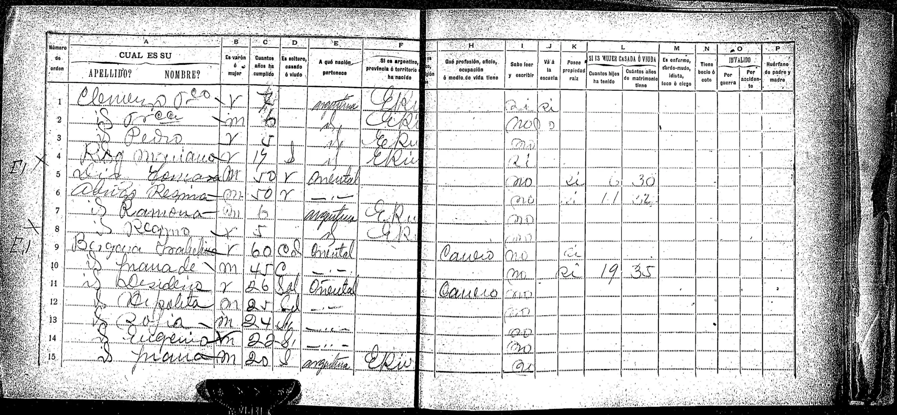

La historia
Francisca aparece una sola vez en los papeles: en el censo nacional de 1895, departamento Colón, Entre Ríos, censada en el hogar de sus padres François Clemenzo y María Celestina Roh. La página 2 la registra en la fila 2: «Fran.ca (lectura probable), mujer, 6 años, argentina, E. Ríos» — el primer y único dato de fecha que tenemos para ella: nacida hacia 1888–1889. Es una de los «5 hijos tenidos» que declara su madre en la página 1.
Sus hermanos censados con ella fueron María Celestina (Maria Celestina Roh) y Pedro (Pedro Clemenzo, 5 años, fila 3); en la fila 1 de la página 2 hay un cuarto niño varón cuyo nombre y edad están demasiado borrosos para leer con seguridad.
Después de 1895, nada: Francisca no aparece en actas de matrimonio, defunción ni en la tradición oral de ninguna rama. Comparte ese silencio con sus hermanos Maria Celestina Roh y Pedro Clemenzo — tres hermanos que se pierden juntos del registro (ver la nota de Maria Celestina Roh).
Cronología
| Año | Fuente | Qué dice |
|---|---|---|
| ~1888–1889 | Deducción censal | Nace en el departamento Colón, Entre Ríos («6 años» en mayo de 1895; la DB no tenía fecha — esta es su primera estimación documentada) |
| 1895 | Censo nacional, dpto. Colón, pág. 2, fila 2 | «Fran.ca (lectura probable), mujer, 6 años, argentina, E. Ríos», censada en el hogar de François Clemenzo × María Celestina Roh; una de los «5 hijos tenidos» declarados por la madre |
| post-1895 | — | Sin rastro documental ni memoria oral en ninguna rama de la familia |
Qué falta / hipótesis
Líneas de investigación
- Buscar acta de bautismo en registros parroquiales de San José o Colón, Entre Ríos, ~1887–1890
- Revisar índices de matrimonios de Entre Ríos y Santa Fe ~1905–1915 por «Francisca Clemenzo» (y variantes Clemence/Clemenceau/Clemencio)
- Buscar defunciones de niñas/jóvenes «Clemenzo» en San José/Colón, 1895–1910
- Buscarla en el censo nacional de 1914 (Entre Ríos y Santa Fe)
Fuentes
- Censo nacional de 1895, departamento Colón, Entre Ríos — págs. 1 y 2 del hogar Clemenzo (imagen en su ficha)
Documentos
